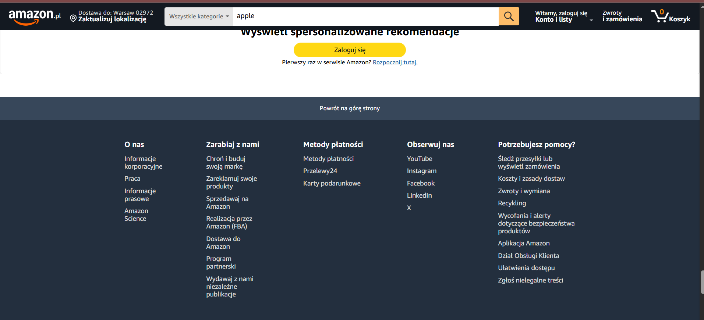

Czym jest heurystyka
Heurystyka to strategia szybkiego rozwiązywania problemów i podejmowania decyzji, która opiera się na uproszczonych regułach, skrótach myślowych i domysłach, a nie na pełnej analizie wszystkich danych. Służy do oszczędzania czasu i energii, ale może prowadzić do błędów poznawczych, ponieważ nie gwarantuje optymalnego ani racjonalnego wyniku. Termin pochodzi od greckiego słowa oznaczającego „znaleźć” lub „odkryć”.
Czym jest analiza heurystyczna
Analiza heurystyczna to metoda oceny systemów, interfejsów lub oprogramowania przez specjalistów, którzy analizują je pod kątem zgodności z przyjętymi zasadami projektowania (heurystykami). Jej celem jest wykrycie potencjalnych problemów z użytecznością lub zagrożeń, które mogą umknąć bardziej formalnym metodom, dzięki wykorzystaniu intuicji i doświadczenia ekspertów, a nie tylko predefiniowanych reguł czy sygnatur.
№2 Zgodność systemu z rzeczywistością
№2 Match Between the System and the Real World
Pełna treść zasady PL:
System powinien przemawiać językiem użytkownika, używając słów, zwrotów i pojęć znanych z życia codziennego, a nie terminologii systemowej. Należy stosować konwencje występujące w świecie rzeczywistym, tak by informacje pojawiały się w naturalnej i logicznej kolejności.
Pełna treść zasady EN:
The way you should design depends very much on your specific users. Terms, concepts, icons, and images that seem perfectly clear to you and your colleagues may be unfamiliar or confusing to your users. So you should use the simple content on your page.
Własnymi słowami:
System powinien używać języka, pojęć i logiki, które są bliskie użytkownikowi, a nie technicznego żargonu. Informacje powinny być przedstawiane w naturalnej kolejności i kontekście, tak jak w prawdziwym świecie.
Zastosowanie w stronach/aplikacjach internetowych:
Przykład 1
Na tym zdjęciu widać, że wszystkie aktywne elementy, takie jak na przykład wybór kategorii, są opisane w maksymalnie prosty sposób, tak samo jak opisy towarów. Dzięki temu każdy użytkownik jest w stanie zrozumieć i intuicyjnie poruszać się po stronie.
źródło obrazu
Przykład 2
Tutaj sytuacja jest podobna – wszystkie przyciski są opisane lub nazwane w sposób zrozumiały nawet dla dziecka.
źródło obrazu
№4 Spójność i standardy
№4 Consistency and Standards
Pełna treść zasady PL:
Zasada ta podkreśla, że interfejs powinien być spójny wewnętrznie (np. w obrębie jednej strony) i zewnętrznie (zgodny ze standardami branżowymi), aby użytkownicy nie tracili czasu na zgadywanie, co oznaczają różne elementy i czy prowadzą do tego samego celu.
Pełna treść zasady EN:
Users should not have to wonder whether different words, situations, or actions mean the same thing. Follow platform and industry conventions.
Własnymi słowami:
Interfejs powinien być spójny i przewidywalny, czyli wyglądać i działać w podobny sposób w różnych miejscach aplikacji oraz zgodnie z przyjętymi standardami.
Zastosowanie w stronach/aplikacjach internetowych:
Przykład 1
Lilou.pl korzysta z powszechnie rozpoznawalnych ikon, takich jak lupa (wyszukiwanie), koszyk (zakupy) czy sylwetka użytkownika (konto). Dzięki temu użytkownik od razu rozumie ich znaczenie, co poprawia intuicyjność interfejsu.
źródło obrazu
Przykład 2
Powszechnie przyjęte jest, że niebieski, podkreślony tekst oznacza link. Jeśli zastosujesz inny sposób oznaczania odnośników, użytkownik może nie zrozumieć, że są klikalne.
źródło obrazu
№6 Nie zmuszaj do zapamiętania
№6 Recognition rather than recall
Pełna treść zasady PL:
Użytkownik nie powinien być zmuszany do pamiętania informacji z jednej części interfejsu do drugiej. Instrukcje, opcje i działania powinny być widoczne lub łatwo dostępne. System powinien wspierać rozpoznawanie poprzez stosowanie znanych ikon, etykiet i elementów interfejsu, zamiast wymagać od użytkownika przypominania sobie informacji.
Pełna treść zasady EN:
Minimize the user's memory load by making objects, actions, and options visible. The user should not have to remember information from one part of the dialogue to another. Instructions for use should be visible or easily retrievable whenever appropriate.
Własnymi słowami:
Nie każ użytkownikowi pamiętać tego, co system może mu sam przypomnieć. Interfejs powinien być zaprojektowany tak, by najważniejsze informacje były widoczne lub łatwo dostępne — bez konieczności ich zapamiętywania.
Zastosowanie w stronach/aplikacjach internetowych:
Przykład 1
Autouzupełnianie w wyszukiwarce, podpowiedzi na podstawie historii, zapisane konta i dane logowania.
źródło obrazu
Przykład 2
Można zawsze zobaczyć, co już masz w koszyku, a także ostatnio przeglądane produkty, zapisane listy i historię transakcji.
źródło obrazu
№8 Estetyka i umiar
№8 Aesthetic and minimalist design
Pełna treść zasady PL:
Interfejsy powinny być estetyczne i zawierać tylko te informacje, które są naprawdę potrzebne. Każdy zbędny element odciąga uwagę użytkownika od tego, co istotne. Projekt powinien być przejrzysty, uporządkowany i wspierać główne cele użytkownika.
Pełna treść zasady EN:
Dialogues should not contain information which is irrelevant or rarely needed. Every extra unit of information in a dialogue competes with the relevant units of information and diminishes their relative visibility. Interfaces should be clean, focused, and support the user's primary goals.
Własnymi słowami:
Ta zasada mówi: nie przesadzaj. Interfejs powinien być czysty, przejrzysty i skupiony na tym, co naprawdę ważne dla użytkownika. Nie chodzi o to, żeby było „ładnie” — chodzi o to, żeby było funkcjonalnie i czytelnie.
Zastosowanie w stronach/aplikacjach internetowych:
Przykład 1
Wikipedia — prościej się nie da.
źródło obrazu
Przykład 2
Na ChatGPT także widać minimalizm i prostotę interfejsu.
źródło obrazu
№10 Pomoc i dokumentacja
№10 Help and documentation
Pełna treść zasady PL:
Choć najlepiej, gdy system jest intuicyjny i nie wymaga wyjaśnień, czasem pomoc i dokumentacja są niezbędne. Użytkownicy powinni mieć łatwy dostęp do jasnych, zwięzłych instrukcji, które wyjaśniają, jak wykonać konkretne zadania lub rozwiązać problemy. Pomoc powinna być łatwa do znalezienia, przeszukiwania i stosowania.
Pełna treść zasady EN:
Even though it is better if the system can be used without documentation, it may be necessary to provide help and documentation. Any such information should be easy to search, focused on the user's task, list concrete steps to be carried out, and not be too large.
Własnymi słowami:
Ta zasada mówi: nawet najlepszy interfejs może potrzebować instrukcji. Użytkownik nie zawsze domyśli się, co zrobić — dlatego warto dać mu wsparcie, gdy tego potrzebuje.
Zastosowanie w stronach/aplikacjach internetowych:
Przykład 1
Allegro — posiada sekcję pomocy i instrukcje dotyczące zakupów, płatności czy zwrotów.
źródło obrazu
Przykład 2

Amazon — oferuje rozbudowaną sekcję pomocy i szczegółowe instrukcje dla użytkowników.
źródło obrazu